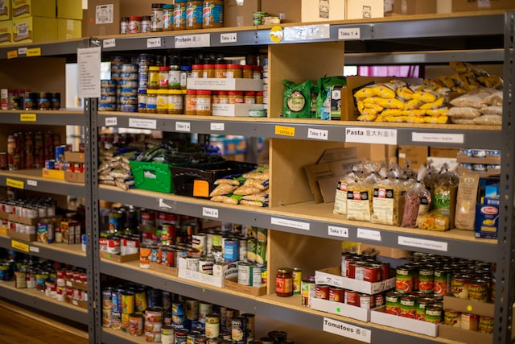

Food Pantries of Hampton Roads
Cities

The Helping Hand will inform the people of Hampton Roads about different food pantries. The Helping Hand has a specific webpage for each city in Hampton Roads. Each webpage will provide 3 food pantries. The food pantries may offer pickup or delivery services, and there are a few food pantries focused on serving military service members. Every webpage will show a photo of a food pantry and provide a quality of service rating. Every webpage will give contact information and a list of food usually offered at a specific food pantry. Finally, The Helping Hand also uses its website and social media accounts (e.g., Facebook, Instagram, and Twitter) to bring awareness about new or old food pantries, so they are not overlooked by anyone.